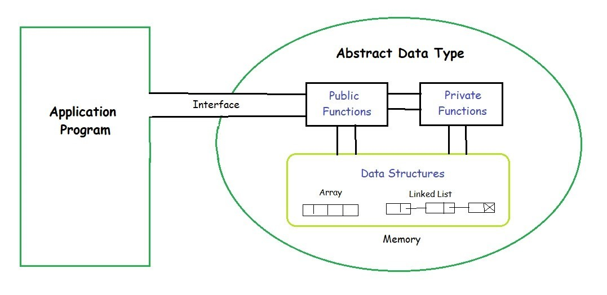
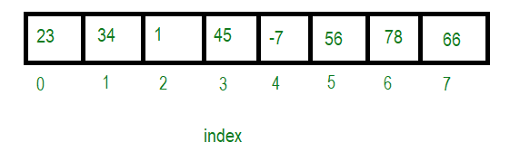
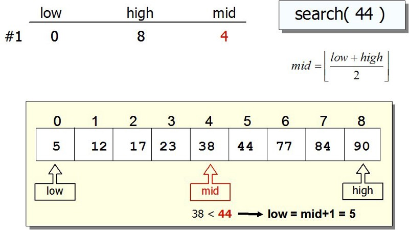
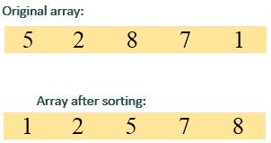

Abstract Data type (ADT) is a type (or class) for objects whose behaviour is defined by a set of value and a set of operations. The definition of ADT only mentions what operations are to be performed but not how these operations will be implemented.
It does not specify how data will be organized in memory and what algorithms will be used for implementing the operations. It is called “abstract” because it gives an implementation-independent view. The process of providing only the essentials
and hiding the details is known as abstraction.

ADT Array
An array is a collection of items stored at contiguous memory locations. The idea is to store multiple items of the same type together. This makes it easier to calculate the position of each element by simply adding an offset to a base value,
i.e., the memory location of the first element of the array (generally denoted by the name of the array). The base value is index 0 and the difference between the two indexes is the offset.
Types of indexing in an array:
0 (zero-based indexing): The first element of the array is indexed by a subscript of 0.
1 (one-based indexing): The first element of the array is indexed by the subscript of 1.
n (n-based indexing): The base index of an array can be freely chosen. Usually, programming languages allowing n-based indexing also allow negative index values, and other scalar data types like enumerations, or characters may be used as an
array index.

Insertion
When the insertion happens at the beginning, it causes all the existing data items to shift one step downward. Here, we design and implement an algorithm to insert an element at the beginning of an array. We assume A is an array with N elements.
The maximum numbers of elements it can store is defined by MAX. We shall first check if an array has any empty space to store any element and then we proceed with the insertion process.
Searching
Linear search or sequential search is a method for finding a target value within a list. It sequentially checks each element of the list for the target value until a match is found or until all the elements have been searched.
“The linear
search is a very simple algorithm. Sometimes called a sequential search, it uses a loop to sequentially step through an array, starting with the first element. It compares each element with the value being searched for, and stops when either
the value is found or the end of the array is encountered. If the value being searched for is not in the array, the algorithm will search to the end of the array.”

Sorting
Sorting an array means to arrange the elements in the array in a certain order. Various algorithms have been designed that sort the array using different methods. Some of these sorts are more useful than the others in certain situations. Internal
sorting means that all the data that is to be sorted is stored in memory while sorting is in progress.
External sorting means that the data is stored outside memory (like on disk) and only loaded into memory in small chunks. External sorting is usually applied in cases when data can’t fit into memory entirely, effectively allowing to sort
data that does not fit in the memory.

Deletion
To delete a specific element from an array, a user must define the position from which the array's element should be removed. The deletion of the element does not affect the size of an array. Furthermore, we should also check whether the deletion
is possible or not in an array..
For example, suppose an array contains seven elements, arr[] = {10, 25, 14, 8, 12, 15, 5); and the user want to delete element 8. So, first, the user must define the position of the 8th element, which
is the 4th, and then check whether the deletion is possible or not. The position of the particular element should not be more than the total elements of an array. Here, we have 7 elements in an array, and the user wants to delete the 8th position
element, which is impossible.